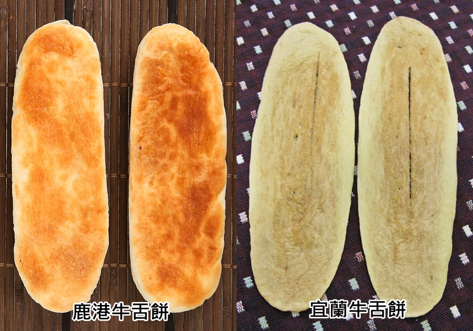
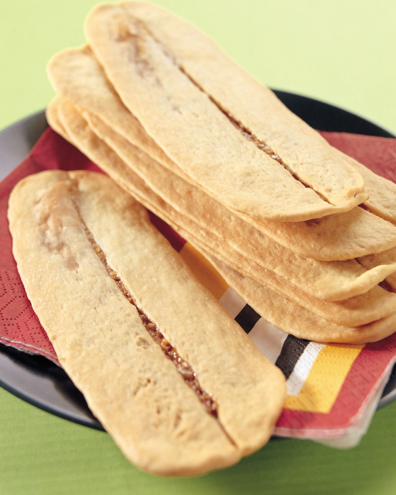
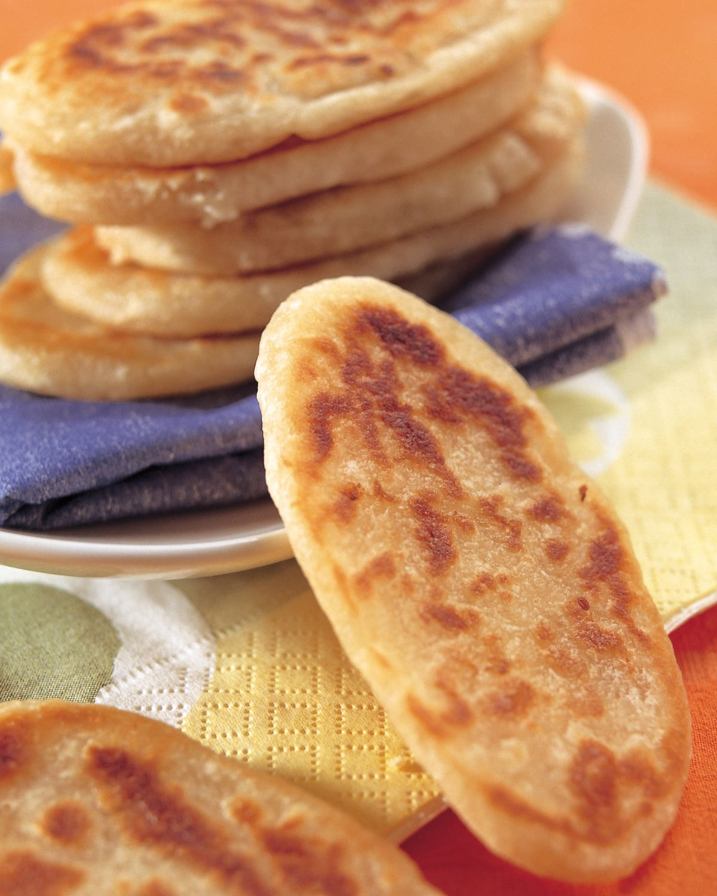

1.由來  牛舌餅，台灣小吃的一種，因為在台灣的宜蘭和鹿港各有一種差異甚大的餅類都被稱做牛舌餅， 因此嚴格來說算是兩種不同的小吃。這兩種餅類的形狀同樣是形似牛舌的長橢圓形，或許也是其名的由來。牛舌餅也是老北京的傳統點心之一。 早期嬰兒出生滿四個月，父母必遵古禮將此餅穿孔掛於嬰兒胸前宴請來訪親友，籍此保佑孩童此後聰明伶俐； 自古延傳迄今而成為蘭陽名餅，因其狀似牛舌故名為牛舌餅。 2.宜蘭和鹿港 因區域的不同作法，可分為宜蘭牛舌餅和鹿港牛舌餅。 宜蘭的特色，外形長而薄，口感脆、硬，屬於餅乾類，而鹿港的特色，外形短而厚，口感酥、軟，包有內餡，屬於麵餅類。 3.宜蘭 宜蘭牛舌餅的作法，將麵粉、奶粉、砂糖、蜂蜜、豬油等材料拌勻後揉成麵糰，  再桿成長薄的牛舌狀，並在表面輕劃一刀後烤製而成，淡淡的糖蜜滋味，甜而不膩，香脆好入口， 讓人一片接一片，愛不停口，實不愧為宜蘭的名餅，它是「老元香」餅鋪所打響的名號。 傳統的宜蘭牛舌餅從原味的蜂蜜口味，發展出眾多口味，以誘惑人舌上的味蕾， 如「鹹蜂蜜芝麻」牛舌餅的口味、「黑胡椒」牛舌餅的口味、「奶油椰子」牛舌餅的口味、「海苔」牛舌餅的口味…等，有鹹鹹甜甜的、有香香甜甜的、鹹鹹辣辣的、有甜甜辣辣的、香香辣辣的…等，任君品嚐。 現今的宜蘭牛舌餅更加精緻，材料改用海藻糖、天然奶油，更加健康美味，尤其0.1公分超薄的特色，酥脆而不硬的口感，加上鮮奶的口味，更適合年長者和小孩兒的食用， 「它是世界上最薄的手工餅乾」，桿餅的手工力道須小心捏拿，縱使是老師傅，一不小心，也會桿破餅皮的。 宜蘭牛舌餅起源有兩種說法，一是指以前嬰兒出生滿四個月時，父母將餅穿孔再掛於嬰兒胸前， 並宴請來訪的親友，同時保佑小孩長大後變得聰明，因餅的形狀類似牛舌，才命名為牛舌餅，也成為蘭陽的名餅。 二是清同治年間，原製作傳統漢餅為主的長房老元香，創辦人無意中研發風味獨特的牛舌餅，意外大受歡迎，牛舌餅也成為老元香與宜蘭的特產。 4.鹿港 鹿港牛舌餅的作法，將中筋麵粉與沙拉油拌勻後揉成餅皮，再將低筋麵粉與麥芽糖拌勻為內餡。用比例1：4的餅皮包內餡後桿成牛舌狀，放在鐵板上煎烤而成， 餅皮金黃膨鬆而不掉屑屑，而內餡的Q黏麥芽糖，不黏牙，不甜膩，口感厚實鬆軟而不乾硬，富嚼勁又爽口，搭配茶水、牛奶喝，風味更佳，以「明豐珍」餅鋪的最為有名。 這兩種牛舌餅的名字雖然相同，但作法與口味各不相同，卻都是廣受歡迎的民俗茶點，兩者材料雖然平凡， 但製造的工法用心嚴謹，皆能擄獲人心而成為台灣的知名伴手禮，所以凡事用心，必能獲得迴響與肯定的。 鹿港牛舌餅起源至少可推到清朝，當時的鹿港是台灣重要的商港，碼頭附近聚集很多苦力工人，他們肚子餓的時候就會買些餅充飢，而牛舌餅就是主要糧食之一。 在早期，牛舌餅是很庶民的點心，不怎麼有名，也沒人拿它來送禮，直到民國68年，前總統李登輝擔任省主席時， 於端午節舉辦第一屆全國民俗才藝活動，將之列入『民俗茶點』， 一夕間知名度暴增，店家一天甚至可以賣出兩萬多塊牛舌餅，自此才打響鹿港牛舌餅名號。
來源(1) 來源(2) 來源(3) 來源(4)